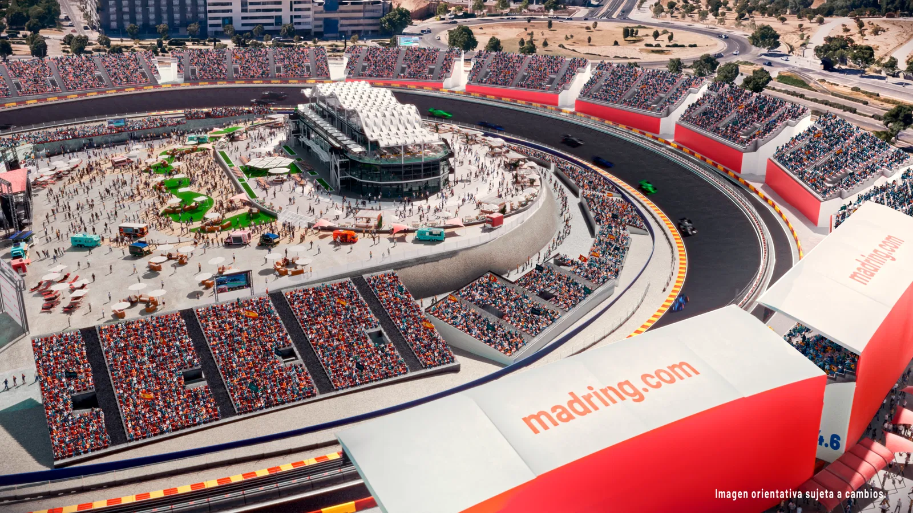

Madring Circuit

Technical Details
Location: Madrid, Spain
Length: 4.500 km
Laps: 60
First GP: —
Curiosities
The Madrid circuit, often referred to as “Madring,” is a new-generation street circuit designed to bring Formula 1 back to Spain’s capital. It represents modern urban circuit design with a focus on spectacle, entertainment, and sustainability. The project symbolizes Spain’s renewed commitment to hosting top-level motorsport in a major city environment. It is expected to become a key European venue in the coming years.